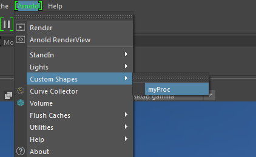
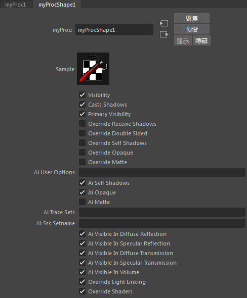

自定义程序是经过编译的着色器程序（.dll、.so、.dylib），可以随时生成 Arnold 节点。
要查看有关如何编写简单的 Arnold 程序的示例，请单击此处。
在 MtoA 中支持自定义程序的最佳方式是编写 MtoA 扩展。当没有扩展时，需要指示 MtoA 可以为此程序创建新类型的 Maya 节点。
首先，必须通过设置 ARNOLD_PLUGIN_PATH 变量，将程序的 dll 文件放在 Arnold 可识别的文件夹中。
为了将这些程序与已在 Maya 中有对应功能的普通程序区分开来，我们需要在此 Arnold 节点中设置一个特定的“maya.procedural”元数据。
设置此元数据的方法包括：
在一个单独的 ASCII 元数据 .mtd 文件中；将其放入与程序库相同的文件夹。该文件需要具有与程序 dll 相同的名称，但是扩展名为 .mtd。例如，一个名为 myProc.dll 的库可以在 myProc.mtd 中设置元数据。下面这个示例说明了应如何设置此元数据：
[node myProc]
maya.name STRING "myProc"
maya.procedural BOOL true
此处的“maya.name”是可选项，可以设置它来选择 Maya 节点类型的名称。
这样设置后，MtoA 将能够识别此程序类型是可以在 Maya 中创建的自定义程序。随后它将显示在“Arnold -> 自定义形状”(Arnold -> Custom Shapes)菜单中。

这将会在 Maya 中创建一个新节点，其中包含程序中定义的所有参数，以及通用的程序参数。

当渲染或导出此节点时，所有程序属性会自动转换至 Arnold。